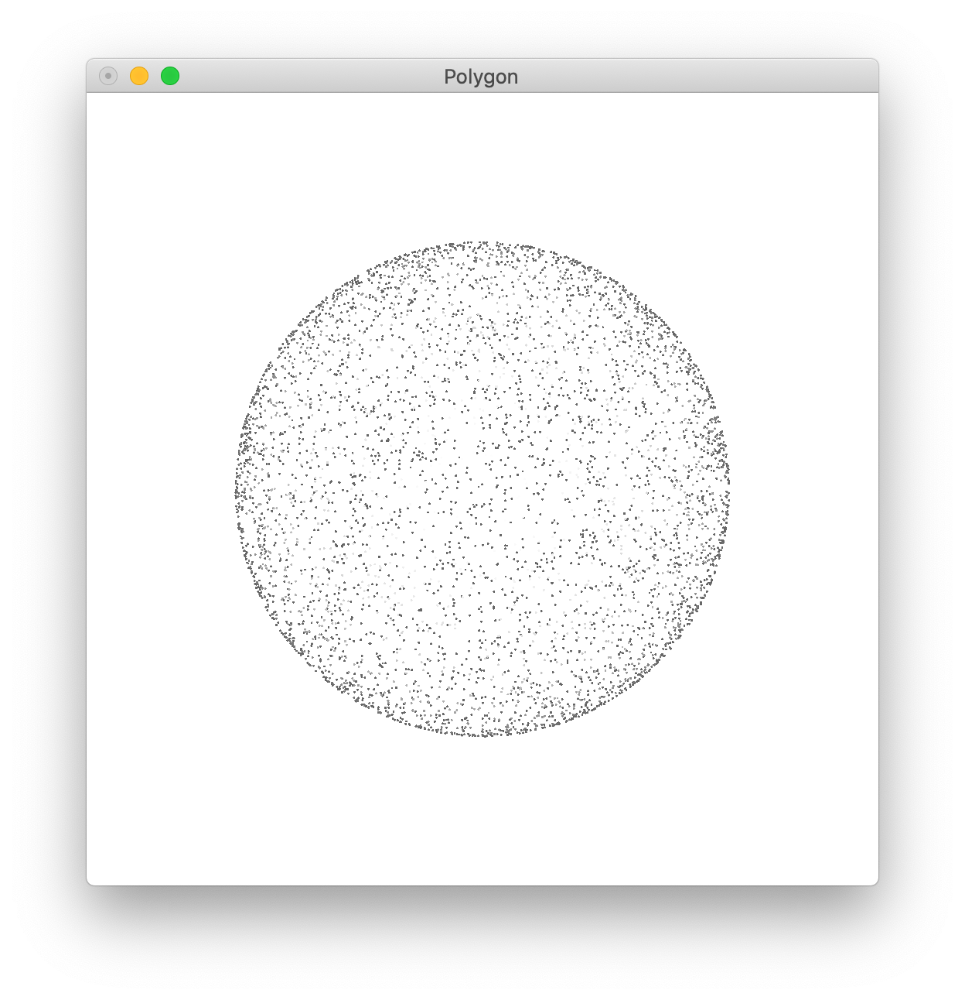

PLY データフォーマット
前のページでも紹介したように，点群データを保存するためのファイルフォーマットは色々存在する．
もちろん，KVSの独自フォーマットであるkvsml でも点群データの記述に対応している，
本Webページでは，CG系で扱われることが多いPLY 形式について述べる．
tetrahedron.ply のファイルの中身を見てみよう．
このデータは面データの可視化で描画した四面体をPLYフォーマット（アスキー形式）で出力したものである．
ply
format ascii 1.0
element vertex 4
property float x
property float y
property float z
property float nx
property float ny
property float nz
property uchar red
property uchar green
property uchar blue
element face 4
property list uchar int vertex_indices
end_header
1 1 1 0.5773503 0.5773503 0.5773503 0 0 0
-1 1 -1 -0.5773503 0.5773503 -0.5773503 255 0 0
-1 -1 1 -0.5773503 -0.5773503 0.5773503 0 255 0
1 -1 -1 0.5773503 -0.5773503 -0.5773503 0 0 255
3 0 1 2
3 0 2 3
3 0 3 1
3 3 2 1
それでは，上のファイルを例にply の基本的なデータフォーマットを確認しよう．
PLYファイルでは，基本的に1〜15行目のヘッダ部とそれ以降のデータ部に分かれる．
ヘッダ部は
1行目に必ず
と記述する必要があり，
でヘッダの終了を示す必要がある．
ヘッダ部を詳しく見ていこう．
2行目は データ部がどのような記述形式（フォーマット）で記載されているかを示す．ここでは，となっており，データの記述形式が ASCII （テキスト）で書かれていることを示す．最後の数値はバージョンを表し，現在の所 1.0 のみが使われている．
データがバイナリで書かれている場合は，バイナリデータの記録方式に従って：
format binary_big_endian 1.0
のいずれかが記述される．
バイナリデータがリトルエンディアン（Intel社のｘ86系環境などで使用される）で記録される場合には，上側の書き方になる．
3行目にもある element 行は「何」が「いくつ」あるのかが記載される．
ここでは vertex (頂点）が4つあることを示している．続いてその直下の行からその「何」かがどのような要素をもつのかが property 行として記述される．ここでは4〜12行目が頂点の要素になる．
つまり，1点あたりがも情報を詳述している．ここでた，1点あたり，6つの情報をもっていることになる．
4〜12行目を見てどのような情報をもっているのかみてみよう．
property float y
property float z
property float nx
property float ny
property float nz
property uchar red
property uchar green
property uchar blue
property の次に書かれているのはデータの型と項目である，
4, 5, 6 行目ではfloat型で ( x, y, z ) の位置情報，
7, 8, 9 行目ではfloat型 で ( nx, ny, nz ）の法線情報，
10, 11, 12 行目では uchar ( unsigned char ) 型 で ( r, g, b ) の色情報，
を持っていることを示し，またデータ部にはその順番でデータが書かれている．
13行目は 3行目と同様の element 行で，ここでは face （面）が4つあると示している．
面情報の詳細にある14行目の property 行：
は，まずデータの型ではなく” list ”と書かれており，データとして値のリストがかかれていることを示す．
次に書かれているデータの型（ここでは uchar ）は項目数の型で，その次の型（ここでは int 型）は項目を記載する型になる．最後の” vertex_indices ”は頂点のインデックスが項目として記載してある事を意味する．
つまり，面情報は，
頂点数 頂点番号1 頂点番号2 ・・・ 頂点番号N
のように並んで（リストととして）書かれており，頂点数が char型，頂点番号がint 型でかかれているということを表している．
ヘッダ部の最後は，15行目にかいてあるように，
が書かれ，ここまでがヘッダ部になり，次の行からはヘッダ部に書いてあった順でデータが並んでいる，
また，ヘッダ部にはコメントを書くことができ，comment で行が始まる．
データ部を見てみよう．
ヘッダ部にも書かれていたとおり，この ply データには4つの頂点（位置情報，法線情報，色情報をもつ）と4つの面（ポリゴン）をもっている．
16〜19行目の4行が頂点情報であり，ASCII形式で書かれている場合は，1行につき1点の情報が property で示した順に書かれている．
ここでは1行毎に
x y z nx ny nz red green blue
が書かれている．つまり，16行目をみれば第 0 頂点は
位置情報 ( x, y, z ) = (1, 1, 1)
法線情報 (nx, ny, nz ) = ( 0.5773503, 0.5773503, 0.5773503 )
色情報 ( R, G, B ) = ( 0, 0, 0 )
という情報を持つことになる．
ここで，plyデータでは頂点のインデックス番号は 0 番から始まる．
-1 1 -1 -0.5773503 0.5773503 -0.5773503 255 0 0 <-- 第 1 頂点
-1 -1 1 -0.5773503 -0.5773503 0.5773503 0 255 0 <-- 第 2 頂点
1 -1 -1 0.5773503 -0.5773503 -0.5773503 0 0 255 <-- 第 3 頂点
頂点のインデックス番号が上のように付いているものとして，面情報のリストは作成される.
次に面情報をみてみよう．
20〜23行目に1行毎に1つの面情報（頂点数と頂点のリスト）が書いてる．20行目をみてみると
0 番目の面は
頂点数が3つ
あり，その面の頂点番号は
0，1，2
である．
つまり，三角形のポリゴンで第0頂点と第1頂点と第2頂点を順に結んだ面である事を示している．
3 0 2 3 <-- 1番目の面
3 0 3 1 <-- 2番目の面
3 3 2 1 <-- 3番目の面
以上がPLYフォーマットの基本的な記述である．他にもpropertyとして不透明度やレーザ強度を記載したり，データの型を double 型で書いたりと，色々なカスタマイズが可能である．ヘッダ部にはASCIIで記載され，それに従ってデータ部が格納されるので，ヘッダ部をみればどのようなデータなのか明確である点が研究用として広く利用されている1つの要因でもある．
点群データを記載する場合は，基本的には上述の記載と変わらず，面の情報が記述されていない（または face が 0 になっている）だけである．
例 PLYデータの読み込みと描画
周知のように，テキストで記述されたデータよりもバイナリで記述されている方が読み込み／書き込みともに早いので，ここではバイナリ形式（リトルエンディアン）を扱っていく．
（バイナリ形式でデータが記載されている場合は，1行に1点ではく，連続して（改行無しに）1点毎のデータが羅列される）
KVSにはそれぞれ点群を読み込むための kvs::PointImporter があるが，これはPLY形式には対応しておらず，kvsml データのみである．またPLYデータの読み込みとしてはポリゴンデータのImporterである kvs::PolygonImporter は対応しているので，
kvs::PolygonObject* object = new kvs::PolygonImporter( "PLY_file.ply" );
のようにしてPolygonObjectとして読み込んだ後にPointObjectにキャストすることも可能である．
但し．ここでは，PLYデータを読み込んで，PointObjectのインスタンスを作成するプログラムを作ることにしよう．
こちらの点群データsphere.plyを読み込んで可視化していこう．
ヘッダ部を確認すると，（データ部はバイナリ形式で書かれているので適当なテキストエディタで開いても文字化けして読めないものになっている）このデータは頂点が5000個で位置情報，法線情報，色情報をもっており，位置情報と法線情報がfloat型，色情報がucha (unsigned char) 型であることがわかる，
ply
format binary_little_endian 1.0
element vertex 5000
property float x
property float y
property float z
property float nx
property float ny
property float nz
property uchar red
property uchar green
property uchar blue
end_header
このデータファイルを読み込んで可視化するプログラムを作っていこう．
1. 作業ディレクトリの作成
作業ディレクトリに「plyImport」というディレクトリを作成して，移動して下さい.
$ mkdir plyImport
$ cd plyImport
2. main.ccp の作成 とファイル読み込み
「main.cpp」というファイルを作成して下さい．
プログラム実行の際にコマンドライン引数としてファイルを読み込むようにするため，引数のチェックをします．
ファイルの読み込みは，コマンドライン引数の第1引数をデータファイルとして読み込む．
int main( int argc, char** argv )
{
if( !(argc == 2 ) ) {
std::cerr << "USAGE (1): ./plyImport ply_data" << std::endl;
exit(1) ;
}
//---- ファイルオープン
std::ifstream fin( argv[1] );
if (!fin) {
std::cout << "Cannnot Open file." << std::endl;
exit(1) ;
}
//---- ここから下にプログラムを追記していく
}
3. ヘッダ部の読み込み
ここでは，読み込んだPLYファイルのpropertyのチェックまではせず，
x y z nx ny nz r g b
の9要素がこの順番で，かつ x, y, z, nx, ny, nz はfloat型，r, g, b は unsigned char 型で書かれていることとする．
ここでは，ヘッダ部は1行ずつ読み込み，スペースまたはタブで区切られたトークンに分割して処理を行う．
念のため，まず．1行目が
ply
となっているかチェックしておくこととする．
//--- getline で1行読み込
const int BUF_SIZE = 512;
char buf[BUF_SIZE]; // 1行の文字列を格納する
//--- 1行目が ply と書かれているかチェック
fin.getline( buf, BUF_SIZE, '\n' );
if( strncmp( buf, "ply", 3 ) ) {
std::cout << "This file is NOT ply-format." << std::endl;
exit(1);
}
次に，ヘッダ部に記載されている頂点数を変数（ここではnumVert）に格納する．頂点数は
elementから始まる行の vertex 項目に頂点数が書かれている．
ここでは 1行をトークンに分割して，0番目のトークンが elementで1番目のトークンがvertexだった場合に2番目のトークンを頂点数として文字列から整数に変換してnumVertに格納する．
最後に，ヘッダ部の最後である「end_header」が格納されたら，ヘッダの読み込みを終了する．
※このプログラムではproperty 行はスキップしている
size_t numVert; //--- 頂点数
// トークンを保存するための配列
char words[ 20 ][BUF_SIZE];
char *w;
size_t numToken;
while( fin.getline( buf, BUF_SIZE, '\n' ) ) {
numToken = 0;
w = buf;
while( (w=strtok(w, " \t") ) !=NULL ) { // トークンに分割する
strcpy( words[numToken], w );
numToken++;
w = NULL;
}
//--- 頂点数を格納する
if( !strncmp( words[0], "element", 7 ) &&
!strncmp( words[1], "vertex", 6 ) ) {
errno = 0;
char *endp;
numVert = std::strtol( words[2], &endp, 10); // 文字列から数値に変換
if (errno != 0 ) { // 正しく数値に変換できたかチェックする
std::cout << words[2] << std::endl;
std::cerr << "strtol error: over flow" << std::endl;;
exit(1);
}
std::cout << "Number of vertices: " << numVert << std::endl;
}
//--- ヘッダ部の終わりがきたらwhile文の繰り返しをぬける
if( !strncmp( words[0], "end_header", 10 ) ) break;
} 4. データ部の読み込み
バイナリ型で書かれている場合，
float型（ 4バイト )のデータ3つがx, y, z に，
次の float型のデータ3つが nx, ny, nz に，
次の unsigned char 型のデータ3つが r, g, b に対応しているので
その順番に，頂点の数だけ読み込んでいく．
std::vector <kvs::Real32> coords; // 全頂点の位置情報を格納
std::vector <kvs::Real32> normals; // 全頂点の法線情報を格納
std::vector <kvs::UInt8> colors; // 全頂点の色情報を格納
float p[3]; // 1頂点の位置情報
float np[3]; // 1頂点の法線情報
unsigned char c[3]; // 1頂点の色情報
for(size_t i=0; i<numVert; i++ ) {
//---- 頂点の読み込み (float型 3つ分を読み込む)
fin.read( (char*) p, sizeof(float)*3 );
coords.push_back( p[0] );
coords.push_back( p[1] );
coords.push_back( p[2] );
//---- 法線の読み込み
fin.read( (char*)np, sizeof(float)*3 );
normals.push_back( np[0] );
normals.push_back( np[1] );
normals.push_back( np[2] );
//---- 色の読み込み
fin.read( (char*)c, sizeof(unsigned char)*3 );
colors.push_back( c[0] );
colors.push_back( c[1] );
colors.push_back( c[2] );
}
上で読み込んだデータからkvs::PointObjectを作成する．
// PointObjectのインスタンスを作成
kvs::PointObject *point = new kvs::PointObject();
point->setCoords( kvs::ValueArray<kvs::Real32>( coords )); // 位置情報
point->setNormals( kvs::ValueArray<kvs::Real32>(normals ) ); // 法線情報
point->setColors( kvs::ValueArray<kvs::UInt8>( colors ) ); // 色情報
point->updateMinMaxCoords(); // 登録した点群の位置情報の最大値・最小値を求める
5. 描画
点群を可視化する．
ここでは，レンダラとして kvs::glsl::PointRendere を作成し，描画する．
描画についてはこれまでと同様に，kvs::Application と kvs::Screen を使い，ScreenにPointObjectとPointRendere を登録する．
kvs::glsl::PointRenderer *renderer = new kvs::glsl::PointRenderer();
kvs::Application app( argc, argv );
kvs::Screen screen( &app );
screen.setGeometry( 0, 0, 512, 512 );
screen.setTitle( "Point Renderer");
screen.registerObject( point, renderer );
screen.show();
return( app.run() );
6. ヘッダファイル
使用したKVSクラスをインクルードしておく．ここでは，
- kvs::PointObject
- kvs::glsl::PointRenderer
と，描画のために
- kvs::Application
- kvs::Screen screen
を使った．
また，C++でのファイルの入力を行ったので，以下の様なヘッダをインクルードする，
#include <kvs/PointObject>
#include <kvs/PointRenderer>
#include <kvs/Screen>
#include <kvs/Application>
#include <fstream>
7. まとめ
以上をまとめたプログラムはこちら： plyImport.zip
8. コンパイルと実行
作成したプログラムをコンパイル，実行しよう．
KVSプログラムをコンパイルするためにはkvsmakeコマンドを用いてMakefileを作成した後に．コンパイルを行う．
$ kvsmake -G <-- Makefile の作成
$ kvsmake <-- コンパイル
エラーなくコンパイルできたら，実行してみよう．
コマンドライン引数として，PLYファイルが必要なので，sphere.plyを今作業しているフォルダ（ここで作成したmain.cppと同じ，plyImportフォルダ内）にダウンロードしておこう．
$ ./plyImport sphere.ply
以上を実行すると，球上に点群がサンプリングされた結果を確認することができる．

問題 データの読み込み部を変更してみよう
tetrahedron_points.ply はtetrahedron.ply の面上に点をサンプリングしたデータであり，PLY データの出力をMeshLab を通して実行した．
このデータのコメント行を確認すると，色情報の次に不透明度 ( alpha ) があることが分かる．
上で作成したプログラムを改良して，tetrahedron_points.ply を読み込んで可視化してみよう．
（ここでは，レンダリングの際に不透明度を反映しなくても良いこととする）
Modefied at April 10, 2023